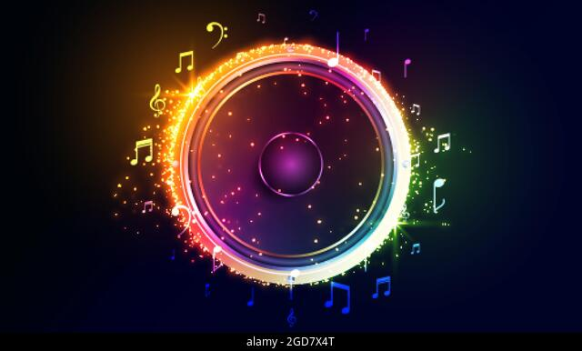

La musica de rap es un estilo de musica con un ritmo con rima de letras. A mi me gusta este tipo de genero por el ritmo que tienen y por las rimas que se hacen en conjunto


La cultura general del hip hop ha estado muy marcada por el origen del rap. Desde los barrios marginales de Nueva York, este nuevo estilo de música urbana nace a modo de protesta y lucha contra el propio sistema y la situación del país. Canciones que se convirtieron en el reflejo de lo que vivían muchos ciudadanos día tras día.
El rap es un género musical que incorpora "rima, habla rítmica y jerga apoteósica", que se interpreta en una variedad de tipos, por lo general sobre un acompañamiento musical. Los componentes del rap incluyen "contenido" (lo que se dice), "flow" (ritmo, rima) y "entrega" (cadencia, tono).
La instrumentación del rap es descendiente del disco, funk, y R&B, tanto de sistemas de sonido como de muestras grabadas y también se usa una sesión de músicos y de instrumentación.
El rap surge como un estilo musical en los barrios negros y latinos de Nueva York en la década de 1970, como la expresión desde el sonido y las melodías de la cultura hip hop, que agrupa corrientes estéticas como el graffiti, el breakdance o el scratch. Desde allí se lanzó al mundo, tomando diferentes peculiaridades regionales en cada país o continente.
Eminem
Tupac
Dr.Dree
Ice Cube
Canserbero